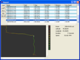

I hit a curious question for myself one day while driving to work. It seemed that no matter what time I left home, I got to work at nearly the same time. The idea being that traffic was such that it somehow normalized my arrival time. This puzzled me for a bit before I decided that the best way to deal with this quandary, was to test it. Easily done since I have a little GPS unit.
Armed with my Garmin, I logged five weeks of driving to work. This gave me a pile of data, so now what. I played with a few tools, Google Earth and the like, but none of these gave the information I wanted. Those that came close, wouldn’t present multiple data points in any way readable. Yeah for me; I get to write a tool.
I chose TCL/TK this time. (tclkit to be precise.) Partly because I have been finding it to be one of the cleaner cross-platfrom languages. Partly because of Tclkit. And mostly because you can use it without installing it. Download the interpreter and go. If you need some extensions, make a lib directory, drop them in there and append the auto_path. That’s all; a significantly easier process that most other languages. (well, Lua goes nearly as well, but doesn’t seem to have a good gui kit yet.) All that and I like the BSD license.
Anyways, I knew that the most important bit on information I wanted gleaned from my data was the start and finish times. Anything else would just be neatness. First I had to get the data out, quite easy to do with tdom, so no worries there. Then what to do with the data? A bit of poking and I decided that using a tabular view would be best. (Which brought wonderings on how spreadsheets would handle XML data, but I didn’t feel like investigating that.) So a bunch more poking, and I found tablelist, which turned out be be an awesome find.
The basic start stop time was right in the time stamps, so that was easy. So I had to add a bit more info. I wanted distance and speed. Speed would fall into place once I had distance, so easy there. Now getting the distance, in miles, from latitude and longitude data seemed like it was going to be a lot more difficult. Turns out to be quite simple, you use the Haversine Formula. So now I had the information I wanted out of my data.
This was too easy. So I added a very basic plot that was colored by speed, just because I could. I thought about tying a image of the roads into the plot, but I never really got around to it. As far as my original question, well, I’m not sure. The current data sample is inconclusive. I could find no collations between when I left, how long it took me, and when I arrived.
But I had fun playing with the data and building this tool, so it was a net gain.

(I also was too lazy to compile tdom for MacOSX, and just ran XP inside of VirtualBox. Just in case you’re wonding about the screenshot here.)
{kind=link}
Silly me forgot to put this up first time around, but here is the code.